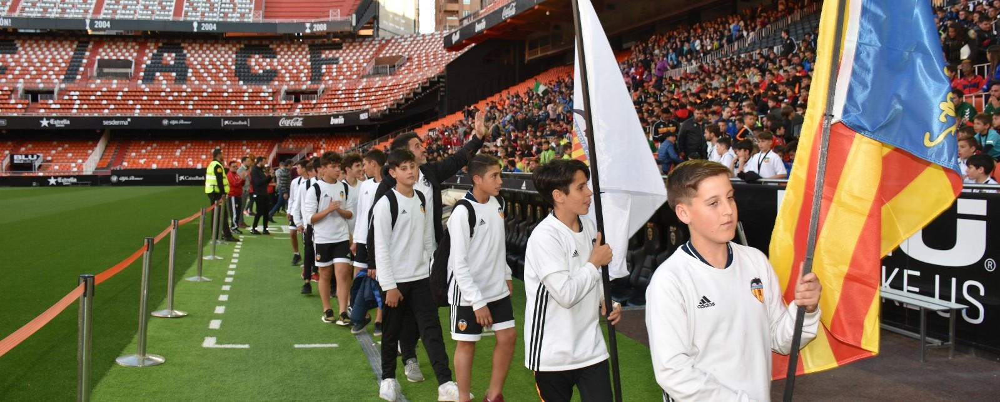
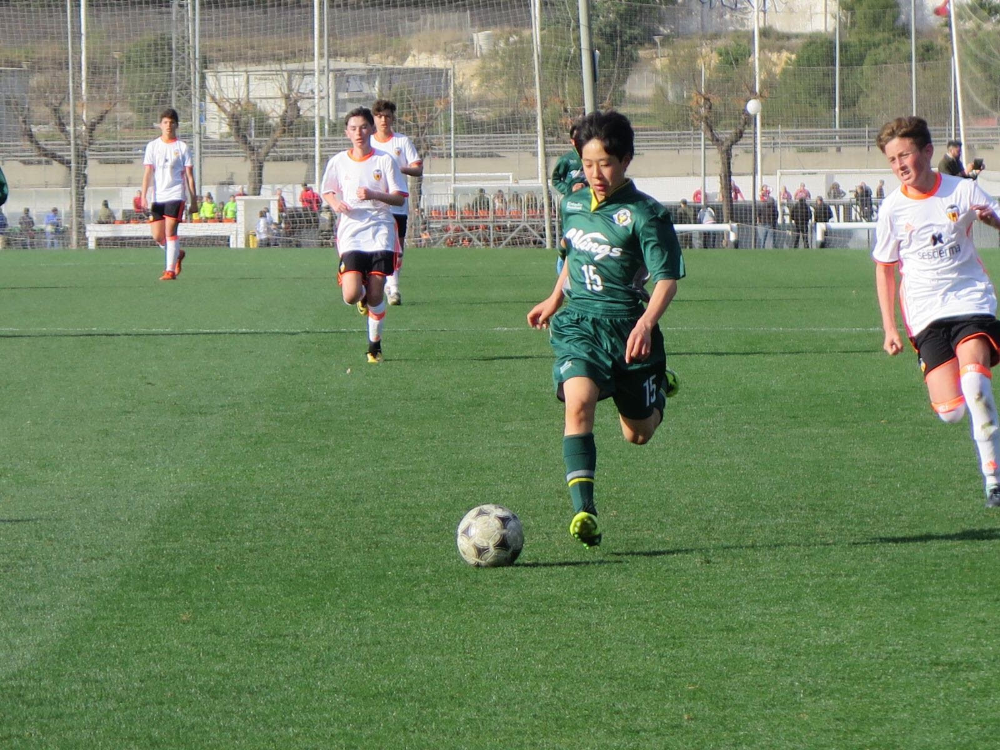
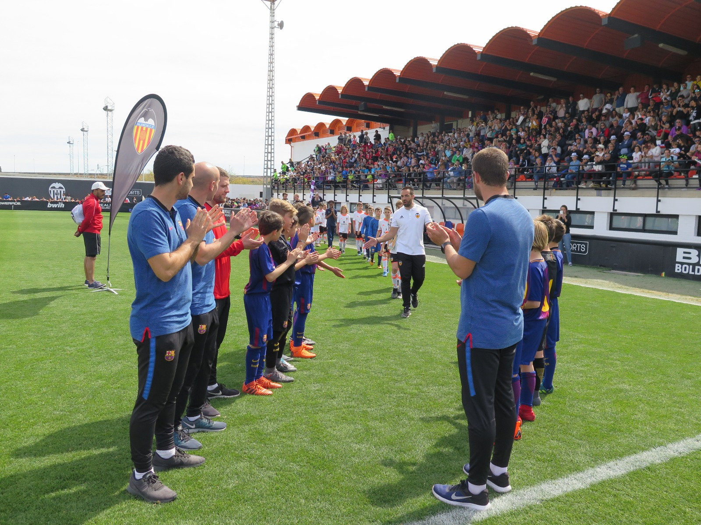
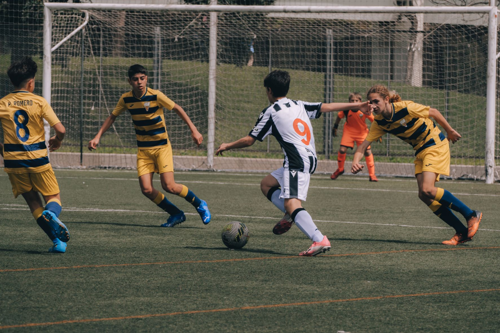
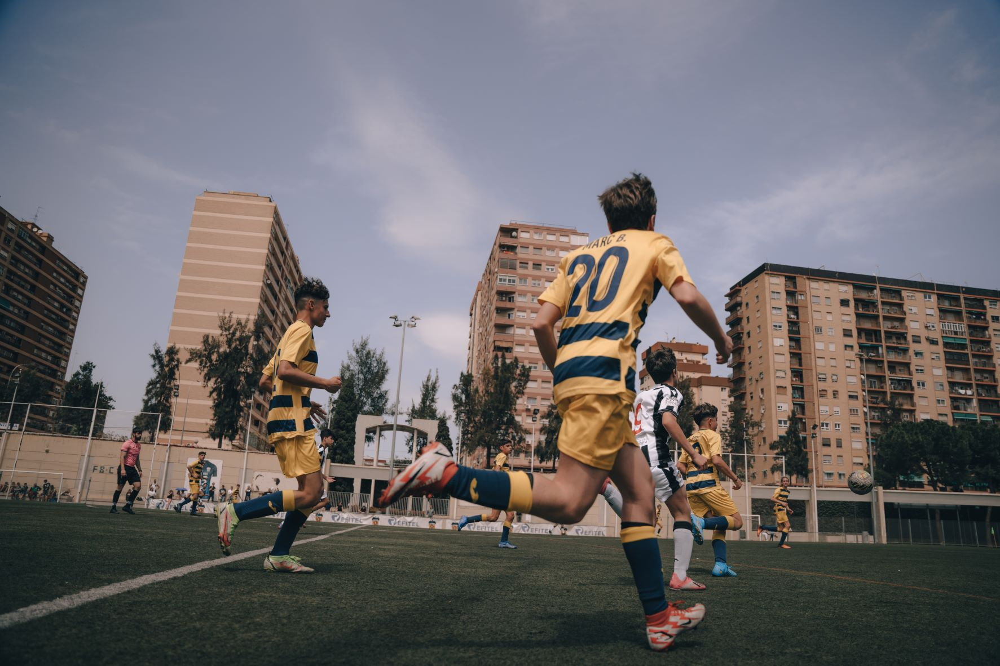

Ver también
R&O Eventos comienza su andadura en 2001 realizando el primer Torneo de fútbol de la mano del Villarreal CF.
En los 22 años posteriores hemos tenido el placer de trabajar con los principales clubes nacionales y extranjeros, colaborando para la realización de torneos, campus, training stages y multitud de eventos deportivos. Más de 4.000 equipos han pasado por nuestros torneos.
15 años organizando para el Villarreal CF sus torneos, training stages y diferentes actividades.
10 años trabajando con el Valencia CF en sus campus, escuelas externas y torneos internacionales.
Colaboraciones con el FC Barcelona, Atlético de Madrid, UD Levante, RCD Espanyol y multitud de entidades internacionales han formado parte de nuestros eventos deportivos.




